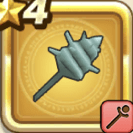

プチアノタクト
攻略班 5.5点 / バギバギマバギクロス
くわしい特徴
【レベル別習得スキル】 Lv1バギ（消費MP：10）小さな竜巻で敵全体にバギ属性の呪文微小ダメージを与える Lv8バギマ（消費MP：15）はげしい竜巻で敵全体にバギ属性の呪文小ダメージを与える Lv20バギクロス（消費MP：21）敵全体にバギ属性の呪文中ダメージを与える Lv28水系へのダメージ+3% Lv36さいだいMP+5 Lv40守備力+4 【限界突破スキル】 1凸バギ属性じゅもんダメージ+10% 2凸こうげき魔力+20 3凸バギ属性じゅもんダメージ+10% 4凸バギクロスのダメージ+15%